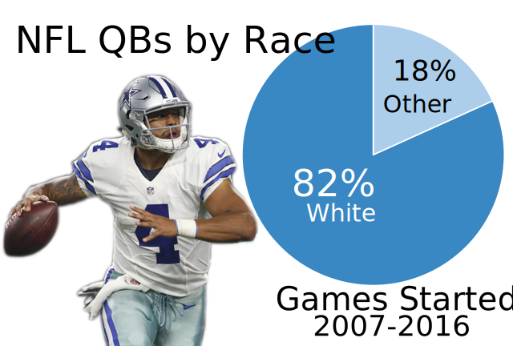

Take a look around the NFL and you'll see something that wasn't possible less than a half century ago. Marlin Briscoe was the first African American quarterback to start an NFL game back in in 1968. Doug Williams made strides for African Americans at the position by winning the Super Bowl in 1988. This season there have already been nine quarterbacks to start games, as of Nov. 15.
In 1996, only five African American quarterbacks started NFL games. That number has grown over the past two decades. Thirteen African American quarterbacks started NFL games in 2007, the most in the past 10 seasons. At least eight African American quarterbacks have started NFL games each season over the past 10 years.
There have only been four seasons in the past 10 years that there weren't least 11 African American quarterbacks to start a game in the NFL. However, three of those seasons have come in the past three years. This is suprising considering the stardom of some of the current African American quarterbacks in the league.
Cam Newton of the Carolina Panthers, Jameis Winston of the Tampa Bay Bucaneers, Russell Wilson of the Seattle Seahawks, Tyrod Taylor of the Buffalo Bills and Dak Prescott (below) of the Dallas Cowboys are becoming the faces of their franchises. The last group of quarterbacks to come into the league like this all the same time included Donovan McNabb, Daunte Culpepper, Aaron Brooks and Michael Vick.
Still, there is a disparity between African American quarterbacks and White quarterbacks in the NFL. White quarterbacks have started more than 82 percent of NFL games over the last decade. The Institute for Diversity and Ethics in Sports said 68.7 percent of NFL players were African American. That is very disproportionate to the breakdown at the quarterback position.

It's quite a puzzling conudrum. There are 32 quarterbacks in the NFL, so you'd expect 22 African American quarterbacks if QBs were brokend down the same way as the rest of the league. That's 13 more than the number that have started a game this year.